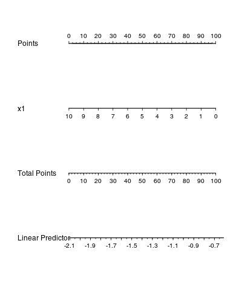
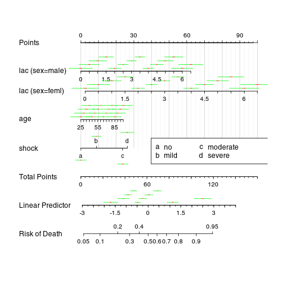
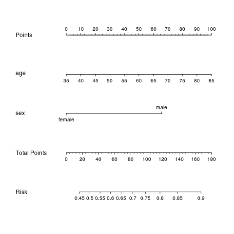
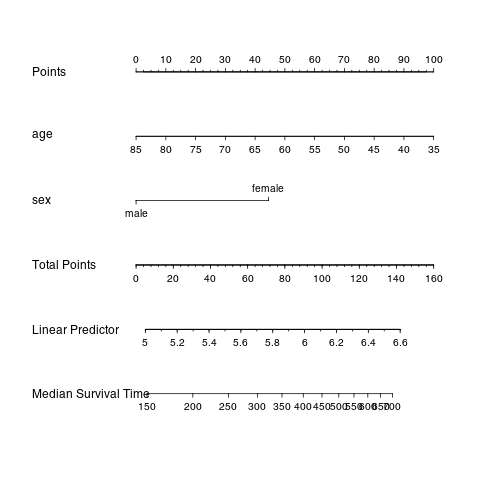
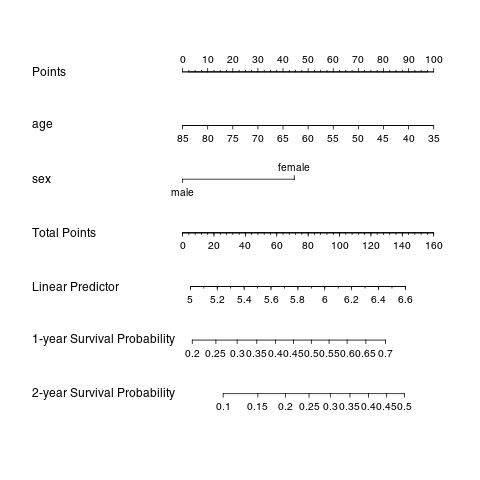
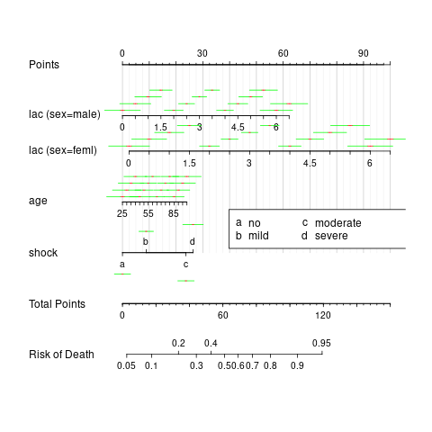
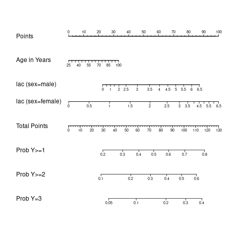
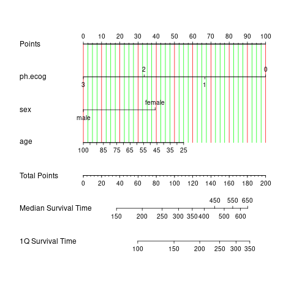
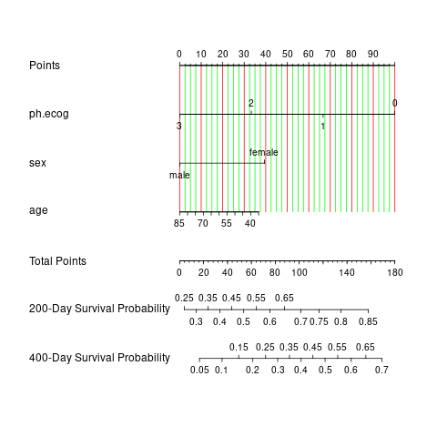
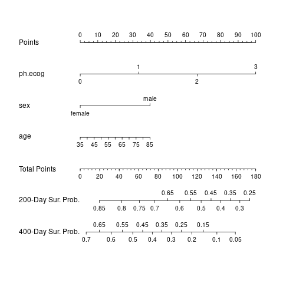

Nomograph 图制作 (一) - 用 rms 绘制 nomogram
Table of Contents
Nomogram 概述
Nomogram，中文常称为诺莫图或者列线图，简单的说是将 Logistic 回归或 Cox 回归的结果进行可视化呈现。它根据所有自变量回归系数的大小来制定评分标准，给每个自变量的每种取值水平一个评分，对每个患者，就可计算得到一个总分，再通过得分与结局发生概率之间的转换函数来计算每个患者的结局时间发生的概率。
R 中用于画 Nomogram 包有 rms 中的 nomogram 函数、 hdnom 和 hdnom 软件包，这篇博客 Nomogram 系列博客的第一篇，主要讲述用 rms 包绘制 Nomograph 的过程。
rms 中的 nomogram 函数画 Nomogram 是最常见的
官方文档中的例子 1
# From Andy Bush <andy@kb4lsn.net>
require(rms)
set.seed(20)
x1<-10*runif(20,0,1)
y1<-c(rep(0,10),rep(1,10))
y2<-5*rnorm(20,0,1)
d<-data.frame(cbind(y1,y2,x1))
dd<-datadist(d)
options(datadist='dd')
flrm<-lrm(y1~x1,x=T,y=T,model=T)
nomlrm<-nomogram(flrm)
plot(nomlrm,xfac=.45)
fols<-ols(y2~x1,x=T,y=T,model=T)
nomols<-nomogram(fols)
plot(nomols,xfac=.45)

## From Zongheng Zhang zh_zhang1984@hotmail.com
n <- 1000 # sample size
set.seed(88) # set seed for replication
age<- rnorm(n, 65, 11)
lac<- round(abs(rnorm(n, 3, 1)),1)
sex<- factor(sample(1:2,n,prob=c(0.6,0.4),TRUE),
labels=c('male','female'))
shock<-factor(sample(1:4,n,prob=c(0.3,0.3,0.25,0.15),TRUE),
labels=c('no','mild','moderate','severe'))
z<- 0.2*age + 3*lac* as.numeric(sex)+ 5*as.numeric(shock) -rnorm(n,36,15)
## linear combination with a bias
y <- ifelse(runif(n) <= plogis(z), 1, 0)
library(rms)
ddist <- datadist(age, lac, shock, sex)
options(datadist='ddist')
mod <- lrm(y ~ shock+lac*sex+age)
nom <- nomogram(mod,
lp.at=seq(-3,4,by=0.5),
fun=plogis,
fun.at=c(.001,.01,.05,seq(.1,.9,by=.1),.95,.99,.999),
funlabel="Risk of Death",
conf.int=c(0.1, 0.7),
abbrev=TRUE, #had not been working for shock
minlength=1)
plot(nom, lplabel="Linear Predictor",
fun.side=c(3,3,1,1,3,1,3,1,1,1,1,1,3),
col.conf=c('red','green'),
conf.space=c(0.1,0.5),
label.every=3,
col.grid = gray(c(0.8, 0.95)),
which="shock")
legend.nomabbrev(nom, which='shock', x=.5, y=.5)

以 lung 数据为例绘制 Nomogram2
绘制逻辑回归 Nomogram
加载软件包，预览 lung 数据
library(Hmisc)
library(grid)
library(lattice)
library(Formula)
library(ggplot2)
library(rms)
library(survival)
data(lung)
head(lung)
inst time status age sex ph.ecog ph.karno pat.karno meal.cal wt.loss 1 3 306 2 74 1 1 90 100 1175 NA 2 3 455 2 68 1 0 90 90 1225 15 3 3 1010 1 56 1 0 90 90 NA 15 4 5 210 2 57 1 1 90 60 1150 11 5 1 883 2 60 1 0 100 90 NA 0 6 12 1022 1 74 1 1 50 80 513 0
添加标签，按照 nomogram 要求打包数据，用逻辑回归构建模型
## 添加变量标签以便后续说明
lung$sex <-
factor(lung$sex,
levels = c(1,2),
labels = c("male", "female"))
## 第三步 按照 nomogram 要求“打包”数据，绘制 nomogram 的关键步骤,??datadist 查看详细说明
dd=datadist(lung)
options(datadist="dd")
## 第四步 构建模型
## 构建 logisitc 回归模型
f1 <- lrm(status ~ age + sex, data = lung)
f1
Logistic Regression Model
lrm(formula = status ~ age + sex, data = lung)
Model Likelihood Discrimination Rank Discrim.
Ratio Test Indexes Indexes
Obs 228 LR chi2 16.85 R2 0.103 C 0.666
1 63 d.f. 2 g 0.708 Dxy 0.331
2 165 Pr(> chi2) 0.0002 gr 2.030 gamma 0.336
max |deriv| 2e-09 gp 0.138 tau-a 0.133
Brier 0.185
Coef S.E. Wald Z Pr(>|Z|)
Intercept -0.5333 1.0726 -0.50 0.6190
age 0.0319 0.0170 1.87 0.0609
sex=female -1.0484 0.3084 -3.40 0.0007
绘制逻辑回归 nomogram 图
## 绘制 logisitc 回归的风险预测值的 nomogram 图
nom <- nomogram(f1, fun= function(x)1/(1+exp(-x)), # or fun=plogis
lp=F, funlabel="Risk")
plot(nom)

绘制 Cox 回归 Nomogram
构建 Cox 风险模型
## 构建 COX 比例风险模型
f2 <- psm(Surv(time,status) ~ age+sex, data = lung, dist='lognormal')
f2
Parametric Survival Model: Log Normal Distribution
psm(formula = Surv(time, status) ~ age + sex, data = lung, dist = "lognormal")
Model Likelihood Discrimination
Ratio Test Indexes
Obs 228 LR chi2 21.04 R2 0.088
Events 165 d.f. 2 Dxy 0.203
sigma 1.052676 Pr(> chi2) <0.0001 g 0.403
gr 1.496
Coef S.E. Wald Z Pr(>|Z|)
(Intercept) 6.9272 0.5417 12.79 <0.0001
age -0.0234 0.0084 -2.78 0.0054
sex=female 0.5193 0.1552 3.35 0.0008
Log(scale) 0.0513 0.0560 0.92 0.3594
绘制 COX 回归中位生存时间的 Nomogram 图
med <- Quantile(f2) # 计算中位生存时间
surv <- Survival(f2) # 构建生存概率函数
## 绘制 COX 回归中位生存时间的 Nomogram 图
nom <- nomogram(f2, fun=function(x) med(lp=x),
funlabel="Median Survival Time")
plot(nom)

绘制 COX 回归生存概率的 Nomogram 图
## 绘制 COX 回归生存概率的 Nomogram 图
## 注意 lung 数据的 time 是以”天“为单位
nom <- nomogram(f2, fun=list(function(x) surv(365, x),
function(x) surv(730, x)),
funlabel=c("1-year Survival Probability",
"2-year Survival Probability"))
plot(nom, xfrac=.6)

评价 Cox 回归的预测效果
计算 c-index
## 第一步 计算 c-index
rcorrcens(Surv(time,status) ~ predict(f2), data = lung)
Somers' Rank Correlation for Censored Data Response variable:Surv(time, status)
C Dxy aDxy SD Z P n
predict(f2) 0.601 0.203 0.203 0.051 3.98 1e-04 228
构建校正曲线
## 第二步 绘制校正曲线
## 参数说明：
## 1、绘制校正曲线前需要在模型函数中添加参数 x=T, y=T，详细参考帮助
## 2、u 需要与之前模型中定义好的 time.inc 一致，即 365 或 730；
## 3、m 要根据样本量来确定，由于标准曲线一般将所有样本分为 3 组（在图中显示 3 个点）
## 而 m 代表每组的样本量数，因此 m*3 应该等于或近似等于样本量；
## 4、b 代表最大再抽样的样本量
## 重新调整模型函数 f2，也即添加 x=T, y=T
f2 <- psm(Surv(time,status) ~ age+sex, data = lung, x=T, y=T, dist='lognormal')
## 构建校正曲线
cal1 <- calibrate(f2, cmethod='KM', method="boot", u=365, m=76, B=228)
cal1
There were 14 warnings (use warnings() to see them)
calibrate.psm(fit = f2, cmethod = "KM", method = "boot", u = 365,
m = 76, B = 228)
n=228 B=230 u=365 Day
index.orig training test mean.optimism mean.corrected n mean.predicted KM KM.corrected std.err
[1,] -0.0003975368 0.02480262 0.005876961 -0.004676736 0.004279200 223 0.2806609 0.2802634 0.2849401 0.2091345
[2,] 0.0075760977 0.01144562 0.015194039 -0.001853945 0.009430043 230 0.3984090 0.4059851 0.4078390 0.1451376
[3,] -0.0362339300 -0.05339624 -0.073752212 -0.003190928 -0.033043002 230 0.5658098 0.5295759 0.5327668 0.1218555
par(mar=c(8,5,3,2),cex = 1.0)
plot(cal1,lwd=2,lty=1,
errbar.col=c(rgb(0,118,192,maxColorValue=255)),
xlim=c(0.25,0.6),ylim=c(0.15,0.70),
xlab="Nomogram-Predicted Probability of 1-Year DFS",
ylab="Actual 1-Year DFS (proportion)",
col=c(rgb(192,98,83,maxColorValue=255)))
重现文章中的例子 cite:zhang-2017-drawin-nomog
Worked example
n <- 1000
set.seed(88) # set seed for replication
age <- rnorm(n, 65, 11)
lac <- round(abs(rnorm(n, 3, 1)),1)
sex <- factor(sample(1:2,n,prob=c(0.6,0.4),TRUE), labels=c('male','female'))
shock <- factor(sample(1:4,n,prob=c(0.3,0.3,0.25,0.15), TRUE), labels=c('no','mild','moderate','severe'))
# linear combination with a bias
z <- 0.2*age + 3*lac* as.numeric(sex)+ 5*as.numeric(shock) - rnorm(n,36,15)
y <- ifelse(runif(n) <= plogis(z), 1, 0)
Y <- ifelse(y==0, 0, sample(1:3, length(y), TRUE))
data <- data.frame(age=age,lac=lac,sex=sex,shock=shock,y=y,Y=Y)
var.labels = c(age="Age in Years",
lac="lactate",
sex="Sex of the participant",
shock="shock",
y="outcome",
Y="ordinal")
label(data) = lapply(names(var.labels), function(x) label(data[,x]) = var.labels[x])
head(data)
Error in label(data[, x]) = var.labels[x] (from #1) :
could not find function "label<-"
age lac sex shock y Y
1 62.51119 2.4 male no 0 0
2 72.11227 2.9 male no 0 0
3 90.80664 1.8 female no 1 1
4 44.69819 3.8 male mild 0 0
5 70.05660 2.1 male severe 0 0
6 66.36159 3.6 female no 1 2
Nomogram for binary outcome
library(rms)
ddist <- datadist(data)
options(datadist='ddist')
mod.bi1 <- lrm(y~shock+lac*sex+age,data)
nom.bi <- nomogram(mod.bi1, lp.at=seq(-3,4,by=0.5),
fun=function(x)1/(1+exp(-x)),
fun.at=c(.001,.01,.05,seq(.1,.9,by=.1),.95,.99,.999),
funlabel="Risk of Death",
conf.int=c(0.1,0.7),
abbrev=TRUE,
minlength=1,lp=F)
plot(nom.bi,lplabel="Linear Predictor",
fun.side=c(3,3,1,1,3,1,3,1,1,1,1,1,3),
col.conf=c('red','green'),
conf.space=c(0.1,0.5),
label.every=3,
col.grid = gray(c(0.8, 0.95)),
which="shock")
legend.nomabbrev(nom.bi, which='shock', x=.5, y=.5)



Nomogram for ordinal outcome variable
Ordinal logistic regression is a type of logistic regression that deals with dependent variables that are ordinal—that is, there are multiple response levels and they have a specific order, but no exact spacing between the levels. In the example, the variable Y contains four levels. Similarly to the binary logistic regression model, ordinal model can be fit with lrm() function. In the model, an interaction between sex and lac is included. Furthermore, the variable lac takes a linear tail-restricted cubic spline function by using rcs() function.
mod.ord <- lrm(Y ~ age+rcs(lac,4)*sex)
fun2 <- function(x) plogis(x-mod.ord$coef[1]+mod.ord$coef[2])
fun3 <- function(x) plogis(x-mod.ord$coef[1]+mod.ord$coef[3])
f <- Newlabels(mod.ord, c(age='Age in Years'))
nom.ord <- nomogram(f, fun=list('Prob Y>=1'=plogis,
'Prob Y>=2'=fun2,
'Prob Y=3'=fun3),
lp=F,
fun.at=c(.01,.05,seq(.1,.9,by=.1),.95,.99))
plot(nom.ord, lmgp=.2, cex.axis=.6)

Nomogram for survival data
library(survival)
lung$sex<-factor(lung$sex,labels=c('male','female'))
mod.sur <- psm(Surv(time,status) ~ ph.ecog+sex+age, lung, dist='weibull')
med <- Quantile(mod.sur)
surv <- Survival(mod.sur)
ddist <- datadist(lung)
options(datadist='ddist')
nom.sur1<-nomogram(mod.sur, fun=list(function(x) med(lp=x, q=0.5),
function(x) med(lp=x,q=0.25)),
funlabel=c("Median Survival Time", "1Q Survival Time"),
lp=F)
plot(nom.sur1, fun.side=list(c(rep(1,7),3,1,3,1,3),rep(1,7)), col.grid = c("red","green"))

library(survival)
lung$sex<-factor(lung$sex,labels=c('male','female'))
mod.sur <- psm(Surv(time,status) ~ ph.ecog+sex+age, lung, dist='weibull')
med <- Quantile(mod.sur)
surv <- Survival(mod.sur)
ddist <- datadist(lung)
options(datadist='ddist')
nom.sur2 <- nomogram(mod.sur, fun=list(function(x) surv(200, x),
function(x) surv(400, x)),
funlabel=c("200-Day Survival Probability", "400-Day Survival Probability"),
lp=F)
plot(nom.sur2,
fun.side=list(c(rep(c(1,3),5),1,1,1,1),
c(1,1,1,rep(c(3,1),6))), xfrac=.7, col.grid = c("red","green"))

Nomogram for semiparametric survival models
mod.cox <- cph(Surv(time,status) ~ ph.ecog+sex+age, lung, surv=TRUE)
surv.cox <- Survival(mod.cox)
nom.cox <- nomogram(mod.cox, fun=list(function(x) surv.cox(200, x),
function(x) surv.cox(400, x)),
funlabel=c("200-Day Sur. Prob.", "400-Day Sur. Prob."),
lp=F)
plot(nom.cox,
fun.side=list(c(rep(c(1,3),5),1,1,1,1),
c(1,1,1,rep(c(3,1),6))))

Creative Commons licensing
TITLE: Nomograph 图制作（一）- g 用 rms 绘制 nomogram
AUTHOR: lengyueyang
DATE: 2018-01-15 19:26:52 UTC+08:00
UPDATED:
LICENSE: The blog is licensed under a Creative Commons Attribution-NonCommercial-ShareAlike 4.0 International License, commercial use is not allowed, for any reprint, please indicate address and signature.

Comments
Comments powered by Disqus